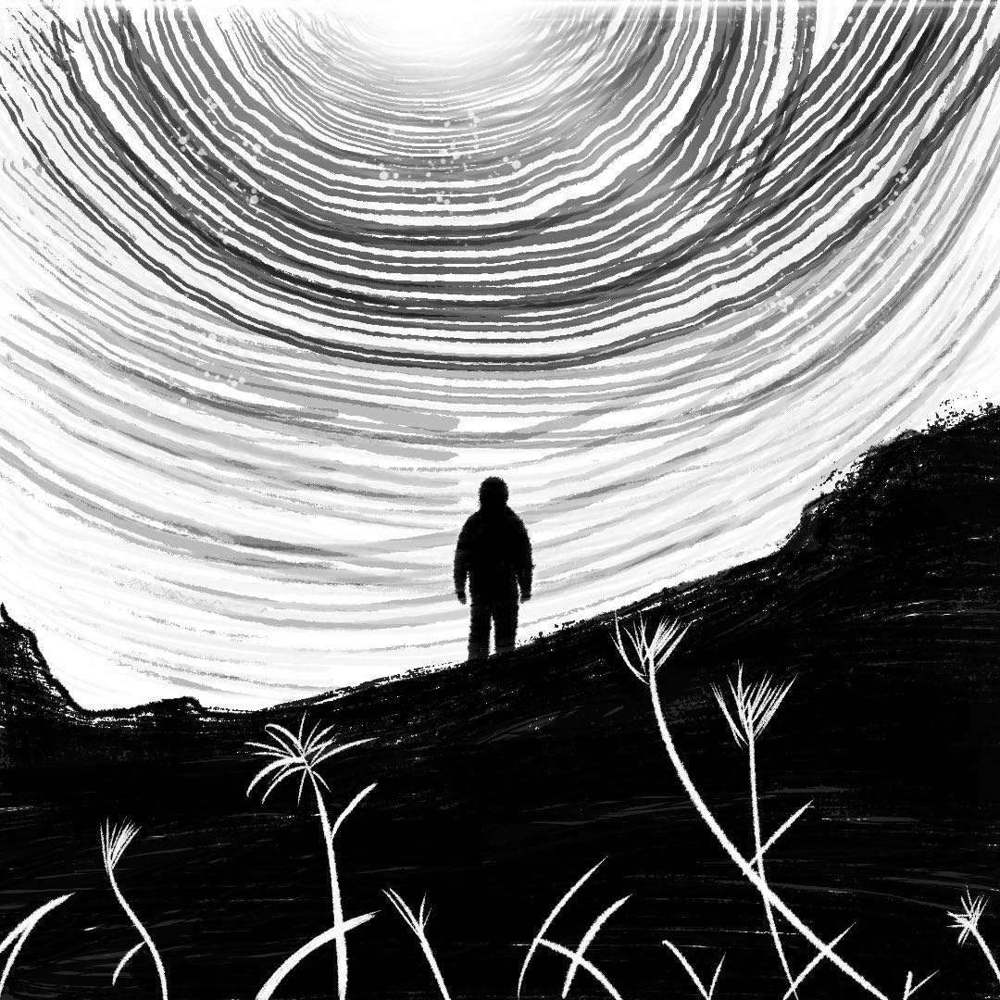

嘉宾对接 · 人物小传 · 脚本撰写 · 剪辑包装
UCL 数字媒体硕士 · 重庆大学 广播电视学士 · 坐标北京
张家萁 · 2002.03 · 访谈制作人
985本科（重庆大学·新闻传播学·广播电视专业）+ QS TOP 9 UCL 数字媒体-制作硕士。具备传媒专业背景与编导思维，擅长从选题策划到成片交付的访谈内容全流程制作。
核心能力围绕「发现故事」与「讲好故事」展开——前期精准识别嘉宾亮点，通过深度调研梳理人物小传；后期从1-2小时访谈素材中提炼核心议题，输出符合短视频传播规律的内容脚本，并独立完成精包装剪辑。在网易、罗德公关、新华社联合项目、人民网等机构的实习中，积累了商单对接、跨团队沟通与项目统筹的复合经验。
对内容创作有极致热爱，文字与逻辑双在线——既能写出有观点的商单脚本，也能在剪辑线上精准卡点。高情商、强同理心，善于与嘉宾建立信任，理解人，理解社会情绪。
传媒背景 · 编导思维 · 内容全流程
用编导思维审视每一个项目——选题、结构、叙事、剪辑
在中国搜索实习期间，与新华社联合策划《中国这十年》视频项目。主导创意方案输出，独立完成 1.2 万字主题背景资料调研与整理——这一过程与访谈节目的嘉宾前采与人物小传高度相似，需要从海量信息中捕捉最具传播力的故事线索和议题观点。
品牌 POP 广告创意作品，完整经历了「理解甲方需求 → 创意构思 → 脚本撰写 → 拍摄执行 → 后期精包装 → 成片交付」的全流程。在有限时长内通过精准的视觉语言与节奏把控传递品牌核心信息，直接对应商单执行的完整链路。

🎓 毕业设计使用 Twine / Harlowe 引擎独立开发的互动叙事游戏。玩家每个选择引导故事走向不同分支——在非线性叙事中重构故事的可能性。这一创作经历训练了对叙事结构、故事节奏和受众参与感的精准把控。
聚焦叙事驱动与情感选择的游戏设计项目。从概念构思到完整设计文档，涵盖叙事机制、用户情感体验弧线与视觉呈现方案。团队密切协作，将抽象的情感概念转化为可落地的叙事设计——训练了对「人物情感逻辑」的敏感度。
访谈制作人的核心能力矩阵
期待加入团队，用内容讲好每一个故事